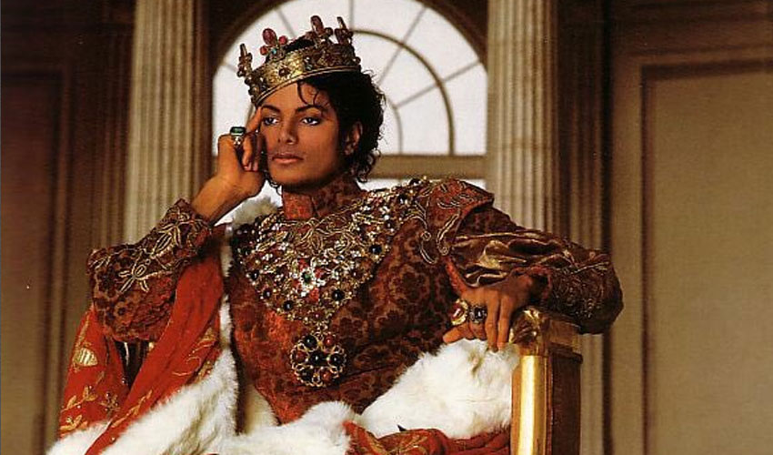

Michael Joseph Jackson nasceu no dia 29 de agosto de 1958, na cidade de Gary, no estado de Indiana, Estados Unidos (EUA). A família dele era simples e morava em uma casa com apenas dois quartos. Filho de Joseph, mais conhecido como Joe, e Katherine Jackson, o cantor foi o sétimo dos nove filhos do casal. Seus irmãos chamam-se Jackie, Tito, Jermaine, Marlon, Randy, Rebbie, La Toya e Janet. O pai de Michael Jackson trabalhava em uma usina siderúrgica, mas, nas horas vagas, tocava guitarra e era empresário musical sem sucesso. Katherine era testemunha de Jeová e tocava piano na igreja.

Os irmãos Jackson cresceram ligados à música e, de acordo com Katherine, desde bem novos eles gostavam de cantar e pegar escondidos a guitarra do pai. A mãe de Michael ouviu-o cantando com cerca de cinco anos, enquanto ele arrumava a cama, e ficou encantada com o talento dele. Ela contou esse episódio para o marido. Desde então, Joe Jackson percebeu a aptidão dos filhos para a música. Sendo assim, sob a supervisão dele, a partir de 1964, as crianças e os adolescentes, conhecidos como os Jackson Brothers, passaram a se apresentar em bares, exposições e, segundo relatos, até em casas de strippers.
Com esse disco que misturava Black Music e Rhythm and Blues (R&B) e que tinha músicas dançantes, o cantor obteve muito sucesso, ganhando vários prêmios, pois conseguiu desviar-se da imagem de menino prodígio que o acompanhara até então. Com Off the Wall, Michael Jackson ganhou os prêmios Grammy de cantor de Soul/R&B, canção de Soul/R&B com "Don't Stop 'Til You Get Enough"e álbum de Soul/R&B. O álbum vendeu mais de sete milhões de cópias e incluiu quatro top 10 singles pop. Entre as músicas de destaque do disco, estão: • Don't stop 'til you get enough • Rock with you • She is out of my life • Off the wall
Michael Jackson já era um dos cantores negros mais conhecidos dos EUA no início dos anos 1980. Chegou a fazer parcerias de sucesso, como em 1982 com o ex-beatle Paul McCartney, com o qual lançou os singles “The Girl Is mine” e “Say, say, say”. Em 1982, lançou Thriller, o álbum mais vendido da história da música, considerado, inclusive, uma obra-prima. Com o disco, o futuro rei do pop tornou-se o principal cantor negro do mundo e da década de 1980.
Considerado revolucionário à época pela mistura de ritmos e estilos musicais como o pop e o rock, o disco Thriller teve enorme sucesso graças à exibição dos videoclipes das canções no recém-criado canal musical Music Television (MTV). As produções tinham efeitos especiais, coreografias e roteiros, chegando a ser minifilmes. Os videoclipes do disco Thriller ajudaram a aumentar o espaço de artistas negros na MTV. Entre os números do disco, podemos citar:

Solidário às causas sociais, em 1985, Michael Jackson participou da campanha mundial da organização "USA for Africa" contra a fome no continente. Ele escreveu a música “We are the world” junto com o cantor Lionel Richie. A canção foi gravada com mais de 40 cantores. O disco do qual faz parte a música vendeu mais de 20 milhões de cópias em todo o mundo. Foram arrecadados mais de 75 milhões de dólares para ajudar a população africana que passava fome.
Pela primeira vez, em 1989, ao dar um prêmio a Michael Jackson, a atriz Elizabeth Taylor, muito amiga dele, chamou-o de “o rei do pop”. Desde então, o cantor começou a ser chamado por esse apelido no mundo todo.

Em 1995, Michael Jackson lançou seu primeiro álbum de compilação HIStory: Past, Present and Future, Livro 1. Nesse ano, o cantor veio ao Brasil para gravar o videoclipe da música “They Don’t Care About Us”, no Pelourinho, em Salvador, na Bahia. Em 2001, o rei do pop promoveu seu primeiro disco de estúdio após anos de hiato. Chamado de Invincible, não teve grande sucesso comercial. Em 2008, Michael Jackson lançou Thriller 25, um relançamento do 25º aniversário de álbum best-seller Thriller, que incluiu regravações com artistas de sucesso à época. Em março de 2009, o cantor anunciou uma turnê mundial, começando por Londres, capital da Inglaterra, a qual não aconteceu.